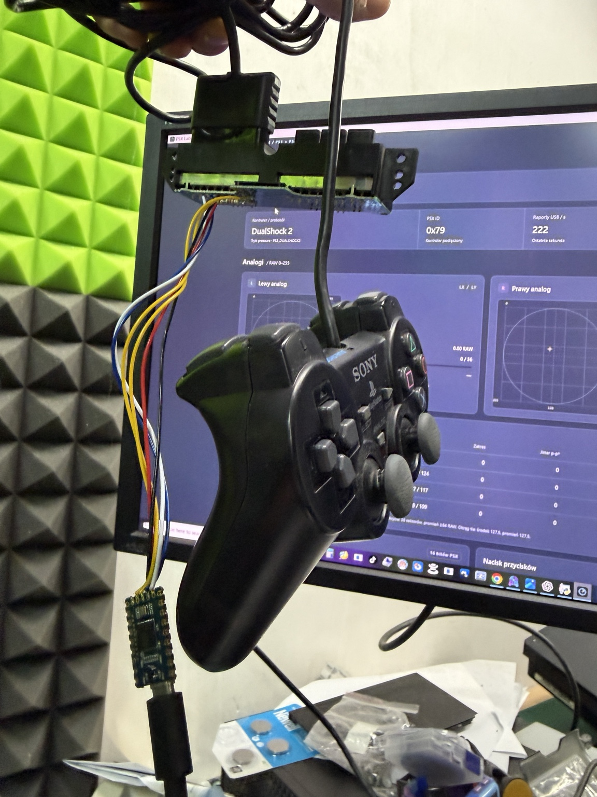
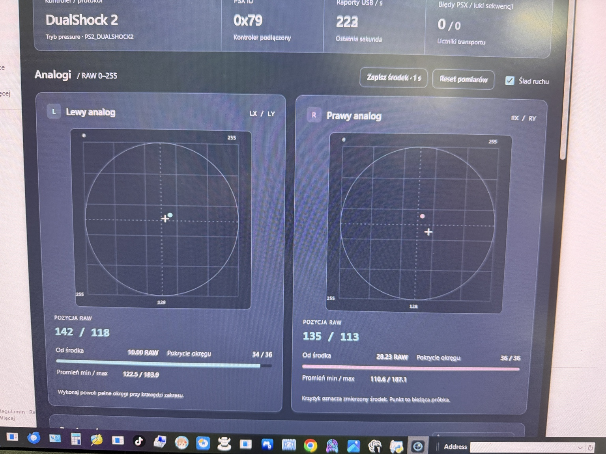
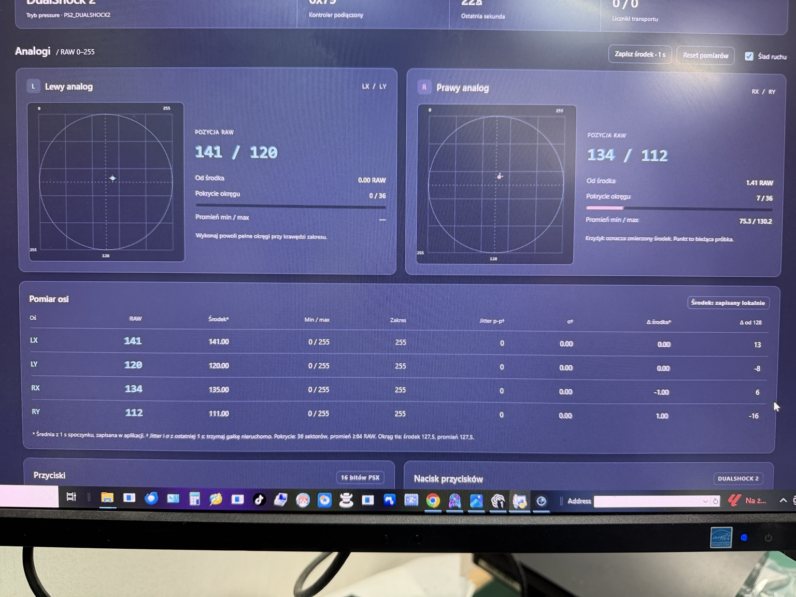

Kalibracja nie kończy się na starcie
W badanych egzemplarzach pełny obrót lub przejście czterech kierunków prowadziły do bardziej powtarzalnych powrotów. Wyniki wspierają adaptację zależną od historii ruchów i poznanego zakresu.
Zrozumieć centrowanie. Zobaczyć dane. Powtórzyć badanie.
Samo podłączenie badanych padów nie zapewniało powtarzalnego środka. Stabilizacja pojawiała się po przejściu zakresów, a wynik zależał od zamontowanych analogów.
W badanych egzemplarzach pełny obrót lub przejście czterech kierunków prowadziły do bardziej powtarzalnych powrotów. Wyniki wspierają adaptację zależną od historii ruchów i poznanego zakresu.
Wymiana analogów na tej samej płycie PS2 zmieniła wyniki. Powtarzalny powrót nie gwarantuje dokładnie 128/128. Badany PS1 dawał mniej powtarzalne środki niż PS2 po wymianie.
RAW to oryginalne wartości raportowane przez kontroler, po jego wewnętrznym przetwarzaniu. Adapter nie dodaje wygładzania ani martwej strefy. To nie jest bezpośredni pomiar ADC.
Wyniki dotyczą opisanych egzemplarzy i prób z adapterem przy PC. Nie ustalają pełnego algorytmu Sony ani braku wszystkich czynności kalibracyjnych przy starcie.
Możesz wykorzystać moduł gniazd wyjęty z PS2. Konsola nie jest potrzebna do późniejszego testowania.
Przytrzymaj BOOT przy podłączaniu płytki przez USB. Skopiuj wsad UF2 na dysk RPI-RP2.
W obsługującej WebHID przeglądarce wybierz interfejs diagnostyczny adaptera. Odczytaj osie, przyciski i dostępny nacisk.
Wibracje nie zostały zweryfikowane; opublikowany schemat nie zasila silników. Pressure zależy od możliwości i trybu podłączonego pada.



Firmware 2.1 używany w badaniach. Przeznaczony dla RP2040-Zero; to nie wsad dla Pico 2 / RP2350.